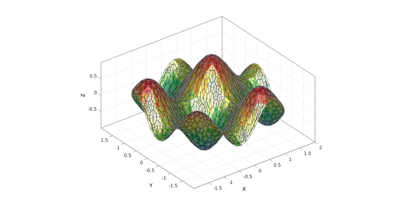
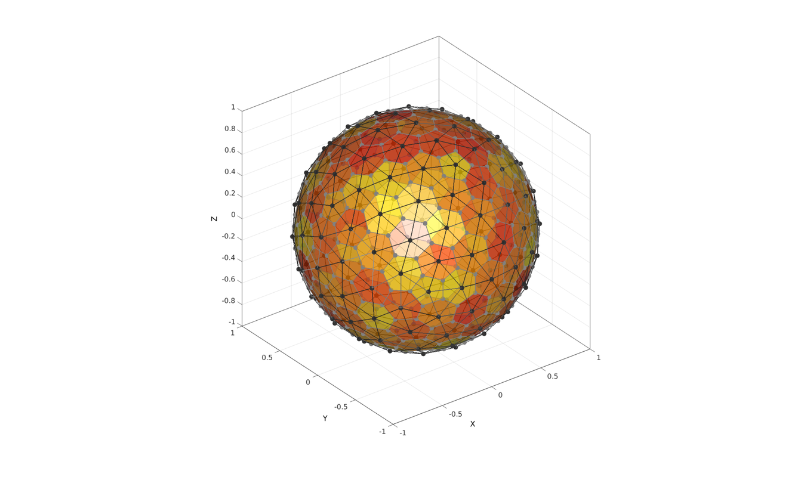

patch_dual
Below is a demonstration of the features of the patch_dual function
Contents
Syntax
[Vd,Fd,Fds]=patch_dual(V,F);
Description
Computes the dual of the input tesselation defined by the vertices V and faces F.
Examples
clear; close all; clc;
Plot settings
fontSize=15;
faceColor='b';
faceAlpha=0.5;
plotColor1=0.2.*ones(1,3);
plotColor2=0.5.*ones(1,3);
edgeWidth=1.5;
markerSize=10;
cmap1=gjet(250);
cmap2=autumn(250);
Example: Computing the dual of a surface triangulation
Creating example triangulation (circle filled triangle)
%Boundary and mesh parameters ns=50; %Number of points on outer boundary (defines how well the circle is sampled) rOut=2; %Outer radius of circular boundary pointSpacing=rOut/15; %Approximate initial point spacing for point seeding stdP=pointSpacing/2*ones(1,2); %Standard deviations for random point offset after point seeding %Creating boundary curve tt=linspace(0,2*pi,ns); tt=tt(1:end-1); r=rOut.*ones(size(tt)); [x,y] = pol2cart(tt,r); Vb=[x(:) y(:)]; %Create Delaunay derived mesh regionCell={Vb}; [F,V,~,DT]=regionTriMeshRand2D(regionCell,pointSpacing,stdP,1,0); V(:,3)=(sin(3*V(:,1))+sin(3*V(:,2)))/2; %Deriving the dual of the patch [Vd,Fd]=patch_dual(V,F);
%Plotting results hf=cFigure; hold on; % title('A geodesic sphere triangulation and its dual consisting of pentagons and hexagons','FontSize',fontSize); xlabel('X','FontSize',fontSize); ylabel('Y','FontSize',fontSize); zlabel('Z','FontSize',fontSize); hp=patch('Faces',F,'Vertices',V); set(hp,'FaceColor','flat','CData',V(:,3),'FaceAlpha',0.9,'EdgeColor',plotColor2,'LineWidth',edgeWidth); %Splitting up the plotting due to difference is face types (e.g. %pentagons,or hexagons) for i=1:1:numel(Fd) Ft=Fd{i}; hp=patch('Faces',Ft,'Vertices',Vd); set(hp,'FaceColor','none','FaceAlpha',0.2,'EdgeColor',plotColor2,'LineWidth',edgeWidth); end colormap(cmap1); axis equal; axis tight; view(3); axis vis3d; grid on; box on; set(gca,'FontSize',fontSize); camlight headlight; lighting flat; drawnow;
Example: The "Buckminster Fuller" dome triangulation and its dual
The patch_dual function assumes that a valid and appropriate dual exists for the input patch data specified by F and V (faces and vertices). If they are not appropriate the output may for instance not form an enclosing shape or output faces may not be planar.
%Defining geodesic dome triangulation r=1; %sphere radius n=2; %Refinements [F,V,~]=geoSphere(n,r); %Deriving the dual of the patch [Vd,Fd]=patch_dual(V,F);
%Plotting results hf=cFigure; hold on; % title('A geodesic sphere triangulation and its dual consisting of pentagons and hexagons','FontSize',fontSize); xlabel('X','FontSize',fontSize); ylabel('Y','FontSize',fontSize); zlabel('Z','FontSize',fontSize); hp=patch('Faces',F,'Vertices',V); set(hp,'FaceColor','none','EdgeColor',plotColor2,'LineWidth',edgeWidth,'Marker','o','MarkerFaceColor',plotColor1,'MarkerEdgeColor','none','MarkerSize',markerSize); %Splitting up the plotting due to difference is face types (e.g. %pentagons,or hexagons) for i=1:1:numel(Fd) Ft=Fd{i}; hp=patch('Faces',Ft,'Vertices',Vd); C=rand(size(Ft,1),1); %Create random color set(hp,'FaceColor','flat','CData',C,'FaceAlpha',0.6,'EdgeColor',plotColor2,'LineWidth',edgeWidth,'Marker','o','MarkerFaceColor',plotColor2,'MarkerEdgeColor','none','MarkerSize',markerSize); end colormap(cmap2); axis equal; axis tight; view(3); axis vis3d; grid on; box on; set(gca,'FontSize',fontSize); camlight headlight; lighting flat; drawnow;

GIBBON www.gibboncode.org
Kevin Mattheus Moerman, gibbon.toolbox@gmail.com